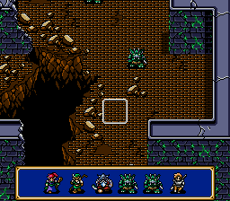
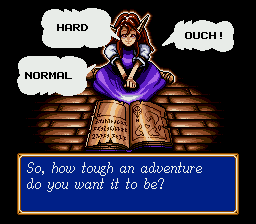
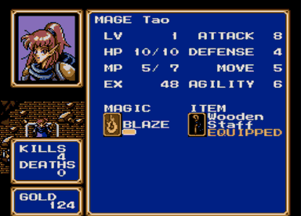
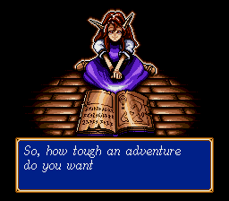

Home › Shining Force › Turn Queue & Tactics
Shining Force
Turn Queue & Tactics
A quality-of-life romhack for the Mega Drive and Genesis · v15
Shining Force rolls the turn order at the start of every round, from each unit's agility, and then keeps it entirely to itself. You act, something happens, and you find out who moves next when they move. Thirty years of players have compensated by guessing.
This patch stops the guessing. It puts a strip along the bottom of the battlefield showing the next six combatants in the exact order the engine will call them — drawn with their own sprites, not icons — and it keeps going into the round after that. Once that was working, it turned out the game was hiding a few other things too, so those got fixed as well.
Four features, roughly three kilobytes of patch, and not one original byte of the ROM moved out of place.
What it adds

1 · The turn queue
Six slots, left to right, in the order the engine will actually call them. Each combatant is drawn with their real battlefield sprite, so you read the bar the same way you read the map: that's Tao, that's a Goblin, that's your healer standing three places too late.
The unit whose turn it is blinks. Everyone in the bar keeps their idle walk animation, so it never looks like a row of stickers. When the current round runs out of combatants the bar keeps filling with the next round, drawn mirrored so you can tell at a glance where this round ends and the following one begins — and the prediction is the engine's own, not a guess.

2 · Choose your difficulty
Start a new game, name your hero, and Simone asks one more question before she sends you off. The three answers arrive in the same bouncing speech balloons the game already uses to pick a save slot — because they are those balloons, widened by two cells and repointed at new text.
- NORMAL — the game exactly as Camelot shipped it.
- HARD — every enemy gets +25% attack, defense and HP.
- OUCH! — +50%. Runefaust stops being a formality.
The scaling is applied to the enemy table each time a battle map is initialised, so it holds for fresh battles and for battles you resume after a defeat. Your choice lives in a spare byte inside the save block, which means each adventure remembers its own setting, and a save made before the patch simply reads as Normal.

3 · Kills and deaths, per character
The status screen has always had a conspicuous gap between the portrait and the GOLD box. It now holds a running tally: how many enemies this character has personally put down, and how many times they've been carried to the church.
Counting turned out to be the interesting part. The engine runs its death routine four times per casualty — once for each pass of the dissolve animation — so a naive counter cheerfully reported four kills for one goblin. The patch only counts the pass where the dying unit still exists.
The tally rides along with your save. A slot is 2,230 bytes plus a checksum byte, and consecutive slots sit 2,300 bytes apart in SRAM, which leaves 69 unused bytes behind every one of them — room enough for the 62 bytes of counters, written there as a second checksummed block through the game's own SRAM routines. Turn the console off and the numbers are still where you left them, per adventure. A save made before the patch has no second block, so its checksum fails and the tally starts at zero rather than at whatever happened to be in those bytes.

4 · Experience that doesn't evaporate
In the original game, a character sitting at 99 EXP who kills something worth 20 does not end up at 19. They end up at 0. The overflow is thrown away, and over a full campaign that's a genuinely painful amount of lost progress — entirely invisible, because the game never shows you the number it discarded.
The patch stashes the surplus at the moment the level-up clamp fires, then writes it back after the level has been granted. 99 + 20 now becomes level up, then 19 EXP. It is the smallest change in the whole hack — six bytes at one site and eight at another — and probably the one you'll feel most over a playthrough.
Download
- Version
- v15 — current
- Patch
- IPS, 3,142 bytes
- Target
- Shining Force (USA), Mega Drive / Genesis, 1,572,864 bytes
- Source MD5
4b4acbe75ff7aaeb534ab78ed95910d1- Tested on
- Genesis Plus GX, Kega Fusion
No ROM is provided here, and none ever will be. Bring your own copy of the US release — check the MD5 above before patching, because an IPS applied to the wrong revision produces a file that boots just long enough to disappoint you.
Applying the patch
- Get an IPS patcher: Flips (Floating IPS) on Windows, macOS or Linux, or Lunar IPS if you prefer the classic. Most emulator front-ends can do it too.
- Point it at
ShiningForce_TurnQueue_v15.ipsand at your unmodifiedShining Force (USA).bin. Let it write a new file rather than patching in place, so you keep a clean original. - Load the result in any Mega Drive emulator, or on hardware via flash cart. The patched ROM is the same size as the original and the header checksum is corrected, so strict emulators and real hardware are both happy.
- Start a New Game to see the difficulty prompt. Existing saves keep working and play at Normal.
Controls for the difficulty prompt: Left / Right to move between the balloons, C or A to confirm.
Questions people actually ask
Which version of Shining Force does the patch need?
The US Mega Drive and Genesis release, 1,572,864 bytes,
MD5 4b4acbe75ff7aaeb534ab78ed95910d1. The patch is an IPS file you apply to
your own copy of that ROM. No ROM is distributed here and none ever will be.
Does it work on real hardware?
Yes. The patched file is exactly the same size as the original and the header checksum is corrected, so a flash cart like the Mega Everdrive loads it the same way it loads the unmodified game.
Do my existing save files still work?
Yes. A save made before patching keeps working and plays on Normal, because the difficulty byte reads as zero. The kill and death counters start at zero on that save and count from there.
How do I apply an IPS patch?
Use Flips (Floating IPS) or Lunar IPS. Point it at the patch and at your unmodified ROM, and let it write a new file rather than patching in place, so you keep a clean original. There are step-by-step notes further up this page.
Does the turn order bar get in the way of the battlefield?
It hides itself whenever the command menu, a dialogue window or the cursor would collide with it, and comes back afterwards. Once a battle is over it disappears entirely.
Can I combine it with other Shining Force hacks?
Usually not. Two IPS patches that touch the same regions of the same ROM overwrite each other and the result is unpredictable. Apply one at a time, always to a clean copy.
Does it change the story, the script or the character stats?
No. The script is untouched and nobody is rebalanced. The only stat change is optional and comes from the difficulty setting, which scales enemy attack, defence and HP by 25 or 50 per cent.
Version history
- v15 Fixed the bar surviving a battle and reappearing over the world map. The victory sequence takes it down while a message window is still covering those cells, which made it skip them, so the bar is now wiped again whenever the game enters a map you walk around on.
- v14 Kill and death counters now persist: they are written into the save as a second checksummed SRAM block behind each slot, and a new adventure starts them at zero.
- v13 Simone's question moved to the real dialogue engine (italic font, typewriter, bleeps). Balloon labels back to plain black and re-centred on each balloon's own interior. Third difficulty renamed OUCH!.
- v11–12 Difficulty selection and enemy scaling, and the turn queue now vanishes when a battle ends.
- v9–10 Kill and death counters, plus the fix for the four-times-per-death counting bug.
- v6–8 Proper Shining Force window frame for the queue, EXP overflow, avatars fully inside the frame, unique mirrored tile variants so hiding the bar can no longer erase a real window, and a ten-frame debounce on menu transitions.
- v1–5 The queue itself: next-round preview, idle animation, current-actor blink, collision-aware auto-hide — and the rewrite to fully in-place hooks after the first version corrupted the intro.
Last updated — current release v15.